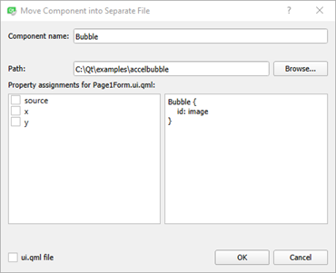

Creating a Mobile Application
This tutorial describes developing Qt Quick applications for Android and iOS devices using Qt Quick Controls. We use Qt Creator to implement a Qt Quick application that accelerates an SVG (Scalable Vector Graphics) image based on the changing accelerometer values.

For more information about the UI choices you have, see User Interfaces.
Setting up the Development Environment
To be able to build the application for and run it on a mobile device, you must set up the development environment for the device platform and configure a connection between Qt Creator and the mobile device.
To develop for Android devices, you must download and install the latest Android NDK and SDK Tools, and then update or install the tools and packages needed for development. In addition, you must install the Java SE Development Kit (JDK). After you have installed all these tools, you must specify the paths to them in Qt Creator. For detailed instructions, see Qt for Android and Connecting Android Devices.
To develop for iOS devices, you must install Xcode and use it to configure a device. For this, you need an Apple developer account and iOS Developer Program certificate that you receive from Apple. For more information, see Connecting iOS Devices.
Creating the Project
- Select File > New File or Project > Application > Qt Quick Application - Swipe > Choose.
- In the Name field, enter a name for the application.
- In the Create in field, enter the path for the project files, and then select Next (or Continue on macOS).
- In the Build system field, select the build system to use for building and running the project: qmake, CMake, or Qbs.
- In the Qt Quick Controls Style field, select one of the predefined UI styles to use, and then select Next.
- Select kits for the platforms that you want to build the application for. To build applications for mobile devices, select kits for Android ARM and iPhone OS, and click Next.
Note: Kits are listed if they have been specified in Tools > Options > Kits (on Windows and Linux) or in Qt Creator > Preferences > Kits (on macOS).
- Select Next.
- Review the project settings, and click Finish (or Done on macOS).
Qt Creator generates two UI files, Page1Form.ui.qml and Page2Form.ui.qml, and a QML file, main.qml. You can modify Page1Form.ui.qml in the Form Editor to create the application main view and main.qml in the Text Editor to add the application logic. For the purposes of this example, you can ignore Page2Form.ui.qml.
Creating the Accelbubble Main View
The main view of the application displays an SVG bubble image that moves around the screen when you tilt the device.
To use Bluebubble.svg in your project, copy it to the project directory (same subdirectory as the QML file). The image appears in Resources. You can also use any other image or a QML type, instead.
To create the UI in the Design mode:
- In the Projects view, double-click the Page1Form.ui.qml file to open it in the Design mode.
- In the Navigator, select Label and press Delete to delete it.
- In Library > QML Types, select Rectangle and drag and drop it to the Page in the navigator.
- Select the rectangle in the navigator to edit its properties:
- In the Id field enter mainWindow, to be able to reference the rectangle from other places.
- Select the Layout tab, and then click the
 (Fill to Parent) button to anchor the rectangle to the item.
(Fill to Parent) button to anchor the rectangle to the item.
- In Library > Resources, select Bluebubble.svg and drag and drop it to mainWindow in the navigator.
- In the Properties pane, Id field, enter bubble to be able to reference the image from other places.
- Select the
 (Export) button in the navigator to export the mainWindow and bubble as properties.
(Export) button in the navigator to export the mainWindow and bubble as properties.
We want to modify the properties of the bubble in ways that are not supported in the Design mode, and therefore we create a custom QML type for it:
- Right-click the image and select Move Component into Separate File.

- In the Component name field, enter Bubble.
- Deselect the x, y, and ui.qml file check boxes.
- Select OK to create Bubble.qml.
Qt Creator creates a reference to the Bubble type in Page1Form.ui.qml.
To check your code, you can compare Page1Form.ui.qml with the Page1Form.ui.qml example file and Bubble.qml with the Bubble.qml example file.
The UI is now ready and you can switch to editing the Bubble.qml and main.qml files in the Text Editor, as described in the following section.
Moving the Bubble
In the Text Editor, edit Bubble.qml to add properties that we will use to position the image:
Image { source: "Bluebubble.svg" smooth: true property real centerX property real centerY property real bubbleCenter }
In the Text Editor, edit main.qml to specify the application title, as illustrated by the following code snippet:
ApplicationWindow { visible: true width: 640 height: 480 title: qsTr("Accelerate Bubble")
Specify bubble properties to position the image:
SwipeView {
id: swipeView
anchors.fill: parent
currentIndex: tabBar.currentIndex
Page1Form {
bubble {
id: bubble
centerX: mainWindow.width / 2
centerY: mainWindow.height / 2
bubbleCenter: bubble.width / 2
Then set the x and y position of the image based on the new properties:
x: bubble.centerX - bubble.bubbleCenter
y: bubble.centerY - bubble.bubbleCenter
}
Then add code to move the bubble based on Accelerometer sensor values:
- Add the following import statement to main.qml:
import QtSensors 5.9
- Add the Accelerometer type with the necessary properties:
Accelerometer { id: accel dataRate: 100 active: true } - Add the following JavaScript functions that calculate the x and y position of the bubble based on the current Accelerometer values:
function calcPitch(x, y, z) { return -(Math.atan(y / Math.sqrt(x * x + z * z)) * 57.2957795); } function calcRoll(x, y, z) { return -(Math.atan(x / Math.sqrt(y * y + z * z)) * 57.2957795); } - Add the following JavaScript code for
onReadingChangedsignal of Accelerometer type to make the bubble move when the Accelerometer values change:onReadingChanged: { var newX = (bubble.x + calcRoll(accel.reading.x, accel.reading.y, accel.reading.z) * 0.1) var newY = (bubble.y - calcPitch(accel.reading.x, accel.reading.y, accel.reading.z) * 0.1) if (isNaN(newX) || isNaN(newY)) return; if (newX < 0) newX = 0 if (newX > mainWindow.width - bubble.width) newX = mainWindow.width - bubble.width if (newY < 18) newY = 18 if (newY > mainWindow.height - bubble.height) newY = mainWindow.height - bubble.height bubble.x = newX bubble.y = newY }We want to ensure that the position of the bubble is always within the bounds of the screen. If the Accelerometer returns not a number (NaN), the value is ignored and the bubble position is not updated.
- Add SmoothedAnimation behavior on the
xandyproperties of the bubble to make its movement look smoother.Behavior on y { SmoothedAnimation { easing.type: Easing.Linear duration: 100 } } Behavior on x { SmoothedAnimation { easing.type: Easing.Linear duration: 100 } }
Locking Device Orientation
The device display is rotated by default when the device orientation changes between portrait and landscape. For this example, it would be better for the screen orientation to be fixed.
To lock the orientation to portrait or landscape on Android, specify it in an AndroidManifest.xml that you can generate in Qt Creator. For more information, see Editing Manifest Files.
On iOS, you can lock the device orientation in a Info.plist file that you specify in the .pro file as the value of the QMAKE_INFO_PLIST variable.
Adding Dependencies
Update the accelbubble.pro file with the following library dependency information:
QT += quick sensors svg xml
On iOS, you must link to the above libraries statically, by adding the plugin names explicitly as values of the QTPLUGIN variable. Specify a qmake scope for iOS builds (which can also contain the QMAKE_INFO_PLIST variable):
ios {
QTPLUGIN += qsvg qsvgicon qtsensors_ios
QMAKE_INFO_PLIST = Info.plist
}
After adding the dependencies, select Build > Run qmake to apply the changes to the Makefile of the project.
Adding Resources
You need to add the Bluebubble.svg image file to the application resources for deployment to mobile devices:
- In the Projects view, double-click the qml.qrc file to open it in the resource editor.
- Select Add to add Bluebubble.svg.
Running the Application
The application is complete and ready to be deployed to a device:
- Enable USB Debugging on the Android device or developer mode on the iOS device.
- Connect the device to the development PC.
If you are using a device running Android v4.2.2, it should prompt you to verify the connection to allow USB debugging from the PC it is connected to. To avoid such prompts every time you connect the device, select the Always allow from the computer check box, and then select OK.
- To run the application on the device, press Ctrl+R.
Files: